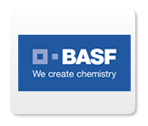
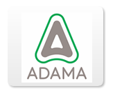
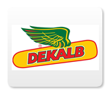

AS MELHORES SOLUÇÕES PARA VOCÊ
Trabalhamos com uma linha completa de adubos, defensivos e sementes, conheça abaixo algumas das marcas que representamos.



VEJA MAIS +
CONHEÇA A CERES INSUMOS AGRÍCOLAS
A Ceres tem uma trajetória de sucesso e realizações e uma visão voltada para o futuro, buscando ser a melhor e mais preparada empresa, capaz de absorver e proporcionar a melhor tecnologia e produtos aos seus clientes, adicionando-se a isto o contínuo respeito ao meio ambiente e participação ativa e reconhecida nas comunidades onde desempenha suas atividades.
CONHEÇA MAIS